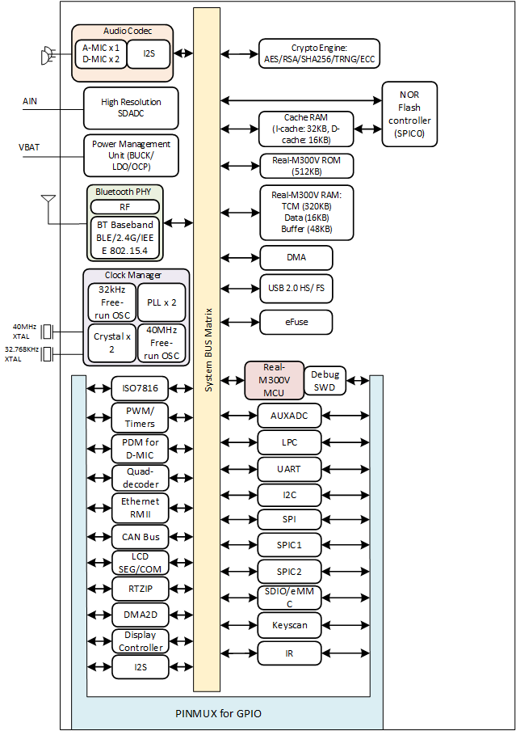
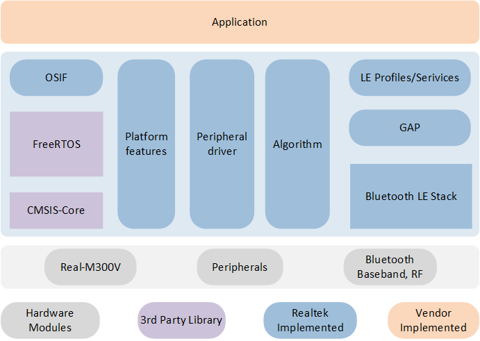
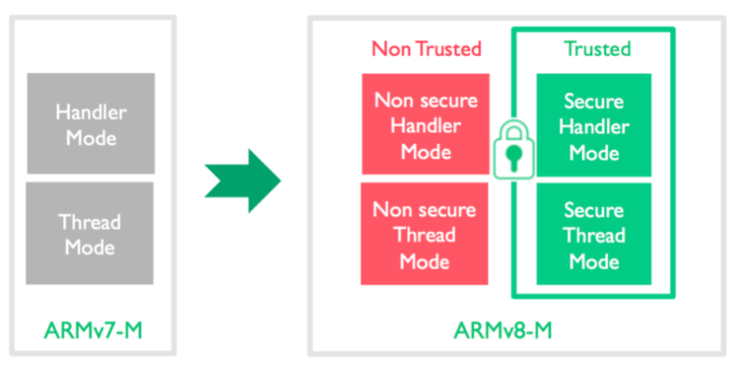
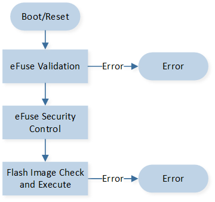
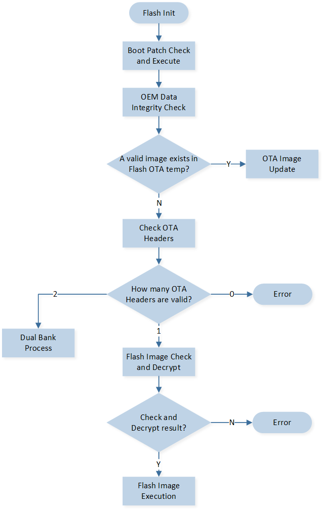
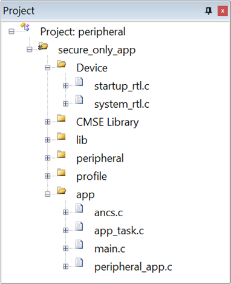
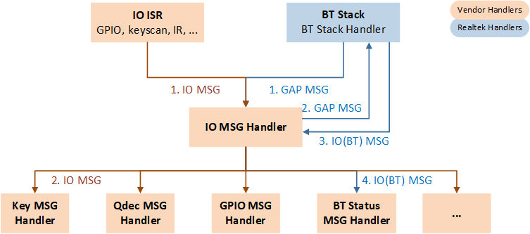

平台概述
SDK 提供了一系列示例应用程序，供开发人员在其开发套件上进行测试和验证设置是否正确。完成这些测试后，开发人员可以将这些示例作为开发自己应用程序的基础。
为了开始使用 SDK，请参考 快速入门，开发人员应首先熟悉该指南。
硬件架构
RTL87x2G 的 CPU 为 Real_M300V，可相当于 ARM Cortex-M55。 RTL87x2G 硬件架构由以下部分组成：
丰富的外设
电源管理单元
时钟管理单元
RF 模块

RTL87x2G 硬件架构
软件架构
系统架构
RTL87x2G 软件架构包括几个主要的部分：
Platform：包括 OTA，Flash 等。
Peripheral driver：提供应用层访问 RTL87x2G 外设的接口。
OSIF：实时操作系统的抽象层。
GAP：应用程序和 BLE 协议栈交互的抽象层。

RTL87x2G 软件架构
操作系统
RTL87x2G 支持多种实时操作系统，默认使用 FreeRTOS，版本为 FreeRTOS V10.4.4，该系统运行在 ROM 上，包括以下几个模块：
任务管理
队列管理
中断管理
资源管理
内存管理
时间管理
OS 接口
OSIF 架构 如下图所示，OSIF 层通过封装特定的 RTOS 接口来提供一层统一的接口。开发者可以基于 OSIF 层来实现自定义的 RTOS，而无需对上层软件进行任何修改。因此，如果希望 APP 能够在不同的 RTOS 上运行，建议使用 OSIF 接口，而不是直接访问特定的 RTOS 接口。

OSIF 架构
任务和优先级
系统会默认创建 Timer task，Idle task 和 Flash task；蓝牙协议栈会默认创建 Bluetooth Controller task 和 Bluetooth Host task。应用程序可以根据实际的需求创建 Task，其中 APP Task 优先级建议设定在 1~4。
任务 |
描述 |
优先级 |
|---|---|---|
Timer |
FreeRTOS 实现的软件定时器 |
6 |
Bluetooth Controller |
蓝牙 HCI 层以下的协议栈实现 |
6 |
Bluetooth Host |
蓝牙 HCI 层以上的协议栈实现 |
5 |
APP |
应用层功能的实现 |
1~4 |
Flash |
flash suspend 操作和 FTL garbage collect |
1 |
Idle |
后台空闲任务，包括低功耗的处理 |
0 |
备注
可以创建多个 APP 任务，同时内存资源也会被相应地分配。
Idle 任务和 Timer 任务是 FreeRTOS 创建的。
任务是配置成根据优先级抢占式的。
硬件中断服务例程（ISR）是由 Vendor 来实现的。
TrustZone
TrustZone 是 ARMv8-M 处理器的基石。它提供了对代码、内存和外设的硬件访问控制，同时满足嵌入式应用程序的需求：实时响应、最小的切换开销、有限的片上资源以及便于软件开发。
ARMv8-M 增加了一种额外的处理器操作状态：安全和非安全执行状态。这些安全状态与现有的线程和处理模式是正交的，使得处理器可以在安全和非安全两种模式之间进行切换。

TrustZone
TrustZone 有如下特性：
允许用户将内存划分为安全和非安全区域。
支持在未经过身份验证时阻止对安全代码/数据的调试。
NVIC、MPU、SYSTICK、内核控制寄存器等也被分割为两个区域，安全代码和非安全代码可以独立访问各自的资源。
安全区和非安全区都有 MSP 和 PSP 堆栈指针。
引入了 Secure Gateway 的概念，非安全代码可以通过 Secure Gateway 访问特定的安全代码，这是非安全代码访问安全代码的唯一方式。
提供 Stack Limit Checking（堆栈限制检查）功能，用于检测堆栈溢出情况。在 ARMv8.1-M 架构中，每个堆栈指针都有相应的堆栈限制寄存器。
SAU（Security Attribution Unit）和 IDAU（Implementation Defined Attribution Unit）的作用是将内存空间划分为安全区和非安全区。CPU 发出的指令会通过 SAU 来判断是否符合安全规则，而其余的总线主设备，例如 DMA、GPU、USB 等发出的指令则会通过 IDAU 来判断是否符合安全规则。如果违反了安全规则，例如非安全代码访问安全区，就会触发安全故障或硬件故障。
以下是 SAU 默认的 secure，non-secure 划分，以 Single Bank（OTA 升级方式之一）为例，共设定了 7 种 Non-Secure 或者 Non-Secure Callable 区域：
区域 |
说明 |
|---|---|
Region0 |
ROM 中 Non-Secure Callable 区域，存放供 Non-Secure 程序调用的 API |
Region1, 2 |
部分 ROM，ITCM1，DTCM0 |
Region3 |
Data SRAM，Buffer SRAM，以及 Flash 最开始的 SOCV config 和 OEM config |
Region4, 5 |
Flash 区域 |
Region6 |
PSRAM，Peripheral 等区域 |
备注
SDK 中默认不开启 TrustZone，所有 code 的执行都在 secure 区域。如需开启 TrustZone 需要额外维护一个 secure app，可以参考 SDK 中 trustzone_demo：rtl87x2g_sdk_xxxx\samples\trustzone_demo 。
启动流程
系统上电或者重启，会执行启动流程，启动流程包括：
eFuse 校验
根据 eFuse 进行安全控制
Flash image 校验和执行
eFuse 校验决定是否启用 secure boot，如启用 secure boot，image authentication 会涉及签名、CMAC、secure version 校验。

启动流程图
在 启动流程图 中，“Flash Image Check and Execute”表示对各种 Flash image 检查和执行，具体流程如下：
检查 OEM Data（Flash layout 包含在此文件中）。
检查是否存在有效的待升级文件。
检查 OTA Bank Header 文件。
检查 OTA Bank 中每一个 Flash image。
执行 image。
Flash Image 校验和执行 是以上流程的流程图。Image 检查方式是 SHA256 完整性校验（关闭 secure boot）或者签名验证（打开 secure boot）。执行 OTA Bank 内 Flash image 的顺序：Boot Patch，BT Stack Patch，Secure APP，System Patch，BT Host，APP。

Flash Image 校验和执行
Dual Bank 启动流程图中的 “Dual Bank Process” 是针对支持 Bank 切换方案的 image 升级处理。当从一个旧版本升级到一个新版本时，Bank0 和 Bank1 中都会存在 images。启动流程会优先校验版本号较高的 OTA Header，如果版本号相同，则优先校验 Bank0。如果校验和解密成功，则执行该 Bank 中的 images；如果校验不成功，会继续校验版本号较低的 OTA Header。

Dual Bank 启动流程图
应用程序
SDK 目录
└── SDK
├── bin 应用程序链接的二进制文件
├── bsp 板级和硬件相关的文件
├── doc 文档
├── include 提供接口定义的头文件
├── samples 配置好可直接使用的 Keil 和 GCC 实例工程
├── subsys 上层和硬件无关的软件协议
└── tools 工具集
示例工程
为了帮助创建应用程序，SDK 中已经包含了许多示例工程，例如 ble_peripheral 以及一些与 BLE 相关的示例。通过学习这些示例工程，开发者可以轻松熟悉 SDK。所有的示例工程都已经配置好，并且根据 RTL87x2G SOC 的内存布局进行了详细的划分。具体的内存划分信息请参考 Memory。
下面以 ble_peripheral 为例，展示如何通过示例工程来开发客制化应用程序。

ble_peripheral 工程示例
ble_peripheral 工程中的文件分为以下几个类别：
Device 目录：存放启动代码
CMSIS 目录：存放 CMSIS 文件
CMSE Library：Non-secure callable library
Lib 目录：应用程序使用的所有二进制文件
Peripheral 目录：应用使用的所有外设驱动和模块代码
Profile 目录：应用使用的 BLE profiles 或者服务
APP 目录：ble_peripheral 应用的实现
RTL87x2G MCU 基于 ARMv8.1 架构，支持 MVE 指令集，可高效处理单精度整数和浮点数运算。默认 SDK 中发布的 lib 和 sample app project 都是选用如下 device。

APP Project Device 选择

MCU APP 支持单精度的整数和浮点 MVE 指令
应用中的一些公共文件说明如下：
文件 |
说明 |
|---|---|
rom_uuid.h |
UUID 头文件是用于在 SDK 识别 ROM 的，无需更改 |
ROM_NS.lib |
ROM 符号库，应用程序链接 ROM 中的符号 |
gap_utils.lib |
实现 BLE 功能的 GAP 库 |
startup_rtl.c |
RTL87x2G 应用程序启动的 C 文件 |
system_rtl.c |
RTL87x2G 应用程序系统的 C 文件 |
board.h |
配置引脚和 DLPS 的头文件 |
flash_map.h |
Flash layout 文件，此文件由 Flash Map Generate Tool 工具生成 |
mem_config.h |
Memory 配置相关的文件 |
示例工程可能会随 SDK 一起更新。为了更好地使用最新的示例代码，建议将新增的用户代码模块化组织。每个示例工程的详细信息请参考相应的使用手册。
APP 处理流程

APP 流程
流程 |
说明 |
|---|---|
Board Init |
PINMUX 和 PAD 初始化设置 |
Gap Init |
GAP 相关参数的初始化 |
Profile Init |
BLE Profiles 的初始化 |
Power Manager Init |
电源管理相关的初始化 |
SW Timer Init |
软件定时器的初始化 |
APP Queue Init |
APP Queue 的初始化 |
Driver Init |
外设的初始化 |
系统是在 main() 函数中初始化，包括：Board、Peripherals、BT Stack、Profile、Power 和 Task 等。
BT Stack、profiles 和外设驱动都在应用层任务中初始化，并实现了 IO 消息机制。所有的功能都被封装成 IO 事件，这些事件会在相关的消息处理器中进行处理。
BT Stack 消息同样被封装成 BT IO 事件，并以相同的方式处理外设事件。

IO消息处理流程
消息和事件处理流程
原始消息的来源有通用 IO Peripherals 的 ISR 和 BT Stack，处理流程如下：
来自通用 IO Peripherals 的 MSG 会被 MSG 分发器转发给 IO MSG Handler 处理。
来自蓝牙协议栈的 MSG 会被 MSG 分发器转发给 BT 状态机，BT 状态机处理完 MSG 后，会封装成 BT IO MSG 发送，MSG 分发器接收到 BT IO MSG 后再转发给 IO MSG Handler 处理。
IO MSG Handler 接收到 MSG 后再判断 Event 类别，进而调用对应的 Event Handler 处理。
用户程序负责以下事项：
实现 IO Peripheral ISR，在 ISR 中完成初步处理，如果需要进一步处理则封装 MSG 发给 APP。
维护 IO MSG Handler，以便接收和处理用户定义的 ISR MSG。
实现应用层相关的 Event Handler。
GAP 层通知 APP 层是通过 MSG 和 Event 机制，而 APP 层可以直接调用 GAP 层的 APIs。
IO 消息
消息格式
typedef struct { uint16_t type; uint16_t subtype; union { uint32_t param; void *buf; }u; }T_IO_MSG;
消息类型定义
typedef enum { IO_MSG_TYPE_BT_STATUS, IO_MSG_TYPE_KEYSCAN, IO_MSG_TYPE_QDECODE, IO_MSG_TYPE_UART, IO_MSG_TYPE_KEYPAD, IO_MSG_TYPE_IR, IO_MSG_TYPE_GDMA, IO_MSG_TYPE_ADC, ... }T_IO_MSG_TYPE;
消息子类型定义
以 T_IO_MSG_UART 为例，定义 UART 的子类型。
typedef enum { IO_MSG_UART_RX = 1, IO_MSG_UART_RX_TIMEOUT = 2, IO_MSG_UART_RX_OVERFLOW = 3, IO_MSG_UART_RX_TIMEOUT_OVERFLOW = 4, IO_MSG_UART_RX_EMPTY = 5, }T_IO_MSG_UART;
用户自定义消息
APP 开发者可以根据需求扩充定义 Message Type 以及自定义 Subtype Message。
Pin 设置
引脚的定义在 board.h 中定义。
#define KEY_0 P4_0 #define BEEP P4_1 #define LED_0 P2_1 #define LED_1 P2_4
DLPS 设置
详细请查阅 低功耗模式 。
存储
存储映射
RTL87x2G MCU 内存包括 ROM，RAM，Cache，Flash 和 eFuse，详情请查阅 Memory。
Flash APIs
Flash 操作的 APIs 如下所列，详细请查阅 Flash。
FLASH_NOR_RET_TYPE flash_nor_read_locked( uint32_t addr, uint8_t* data, uint32_t len); FLASH_NOR_RET_TYPE flash_nor_write_locked( uint32_t addr, uint8_t* data, uint32_t len); FLASH_NOR_RET_TYPE flash_nor_erase_locked( uint32_t addr, FLASH_NOR_ERASE_MODE mode); FLASH_NOR_RET_TYPE flash_nor_try_high_speed_mode(FLASH_NOR_IDX_TYPE idx, FLASH_NOR_BIT_MODE bit_mode);
FTL
FTL(Flash Transport Layer) 是 BT Stack 和用户程序读写 flash 数据的抽象层，详情请查阅 Flash。
eFuse
eFuse 是一种一次编程的存储体，用来存储重要且固定的信息，例如：UUID，security key 以及其它只会配置一次的信息。eFuse 中每一 bit 不能从 0 改成 1，并且也没有擦除的操作，所以更新 eFuse 要十分小心。Realtek 提供 MPTool 更新 eFuse。
中断
Nested Vectored Interrupt Controller (NVIC)
NVIC 特性
16 个 Real-M300V 异常，96 条可屏蔽的中断通道
8 个可编程的中断优先级
支持 Secure 和 Non-secure 向量表的重映射
低延迟异常和中断处理
系统控制寄存器（System Control Registers）的实现
备注
NVIC 和处理器内核接口紧密耦合，使得低延迟中断处理和高效处理晚抵达中断都成为可能。所有的中断包括内核异常都由 NVIC 管理。中断向量表用于管理和处理不同类型的中断。它是存储在内存中的一个数据结构，包含了中断处理程序的入口地址。中断向量表机制提供了一种灵活的方式来处理不同的中断类型。通过在中断向量表中存储中断处理程序的入口地址，系统可以快速定位并调用与中断类型相关的处理程序，从而提高系统的响应速度和效率。
RTL87x2G 支持两种方式来更新中断向量表：
RamVectorTableUpdate_ext()API：允许在中断服务例程中运行 XIP 代码。但这将带来额外的 4us 入口和 3.6us 出口的 CPU 开销。RamVectorTableUpdate()API：需要确保中断服务例程运行 RAM 代码，没有额外的 CPU 开销。
备注
RTL87x2G 引入 flash suspend 和 resume 机制，该机制必须确保在中断服务例程中不访问 Flash，为此需要在中断中添加一层封装（wrapper）。默认情况下建议使用 RamVectorTableUpdate_ext() API，以确保系统的稳定性和兼容性。而在对中断响应时间有严格要求的特殊情况下，建议使用 RamVectorTableUpdate() API 以获得更快的中断响应时间。
中断向量表
Exception Number |
NVIC Number |
Exception Type |
Description |
|---|---|---|---|
1 |
Reset |
Reset |
|
2 |
NMI |
Non-maskable interrupt The WDG is linked to the NMI vector |
|
3 |
Hard Fault |
All fault conditions if the corresponding fault handler is not enabled |
|
4 |
MemManage Fault |
||
5 |
Bus Fault |
||
6 |
Usage Fault |
||
7~10 |
RSVD |
||
11 |
SVC |
Supervisor Call |
|
12 |
Debug Monitor |
Debug monitor (breakpoints, watchpoints, or external debug requests) |
|
13 |
RSVD |
||
14 |
PendSV |
Pendable Service Call |
|
15 |
SYSTICK |
System Tick Timer |
|
16 |
[0] |
System_ISR |
Interrupt CPU when system wakes up by GPIO |
17 |
[1] |
WDT |
Watch Dog Timer interrupt |
18 |
[2] |
Internal use |
|
19 |
[3] |
Internal use |
|
20 |
[4] |
Zigbee_ISR |
Zigbee interrupt |
21 |
[5] |
BTMAC_ISR |
BTMAC interrupt |
22* |
[6] |
Peripheral_ISR |
See Below Table: Peripheral ISR (an Extension of interrupt) |
23 |
[7] |
RSVD |
|
24 |
[8] |
RTC |
Real-Time Counter interrupt |
25 |
[9] |
GPIO_A0 |
GPIO_A0 interrupt (GPIO_A corresponds to GPIO0 in Address Map sheet) |
26 |
[10] |
GPIO_A1 |
GPIO_A1 interrupt (GPIO_A corresponds to GPIO0 in Address Map sheet) |
27 |
[11] |
GPIO_A[2:7] |
GPIO_A[2:7] interrupt (GPIO_A corresponds to GPIO0 in Address Map sheet) |
28 |
[12] |
GPIO_A[8:15] |
GPIO_A[8:15] interrupt (GPIO_A corresponds to GPIO0 in Address Map sheet) |
29 |
[13] |
GPIO_A[16:23] |
GPIO_A[16:23] interrupt (GPIO_A corresponds to GPIO0 in Address Map sheet) |
30 |
[14] |
GPIO_A[24:31] |
GPIO_A[24:31] interrupt (GPIO_A corresponds to GPIO0 in Address Map sheet) |
31 |
[15] |
GPIO_B[0:7] |
GPIO_B[0:7] interrupt (GPIO_B corresponds to GPIO1 in Address Map sheet) |
32 |
[16] |
GPIO_B[8:15] |
GPIO_B[8:15] interrupt (GPIO_B corresponds to GPIO1 in Address Map sheet) |
33 |
[17] |
GPIO_B[16:23] |
GPIO_B[16:23] interrupt (GPIO_B corresponds to GPIO1 in Address Map sheet) |
34 |
[18] |
GPIO_B[24:31] |
GPIO_B[24:31] interrupt (GPIO_B corresponds to GPIO1 in Address Map sheet) |
35 |
[19] |
DMA_Channel0 |
RTK-DMA channel0 global interrupt |
36 |
[20] |
DMA_Channel1 |
RTK-DMA channel 1 global interrupt |
37 |
[21] |
DMA_Channel2 |
RTK-DMA channel 2 global interrupt |
38 |
[22] |
DMA_Channel3 |
RTK-DMA channel 3 global interrupt |
39 |
[23] |
DMA_Channel4 |
RTK-DMA channel 4 global interrupt |
40 |
[24] |
DMA_Channel5 |
RTK-DMA channel 5 global interrupt |
41 |
[25] |
DMA_Channel6 |
RTK-DMA channel 6 global interrupt |
42 |
[26] |
DMA_Channel7 |
RTK-DMA channel 7 global interrupt |
43 |
[27] |
DMA_Channel8 |
RTK-DMA channel 8 global interrupt |
44 |
[28] |
DMA_Channel9 |
RTK-DMA channel 9 global interrupt |
45 |
[29] |
PPE |
Pixel Process Engine interrupt |
46 |
[30] |
I2C0 |
I2C0 interrupt |
47 |
[31] |
I2C1 |
I2C1 interrupt |
48 |
[32] |
I2C2 |
I2C2 interrupt |
49 |
[33] |
I2C3 |
I2C3 interrupt |
50 |
[34] |
RTK UART0 |
normal interrupt |
51 |
[35] |
RTK UART1 |
normal UART interrupt |
52 |
[36] |
RTK UART2 |
normal UART interrupt |
53 |
[37] |
RTK UART3 |
normal UART interrupt |
54 |
[38] |
RTK UART4 |
normal UART interrupt |
55 |
[39] |
RTK UART5 |
normal UART interrupt |
56 |
[40] |
SPI 3Wire |
SPI 3Wire interrupt |
57 |
[41] |
SPI0 |
SPI0 interrupt |
58 |
[42] |
SPI1 |
SPI1 interrupt |
59 |
[43] |
SPI Slave |
SPI Slave interrupt |
60 |
[44] |
Timer_0 |
Timer interrupt |
61 |
[45] |
Timer_1 |
Timer interrupt |
62 |
[46] |
Timer_2 |
Timer interrupt |
63 |
[47] |
Timer_3 |
Timer interrupt |
64 |
[48] |
Timer_4 |
Timer interrupt |
65 |
[49] |
Timer_5 |
Timer interrupt |
66 |
[50] |
Timer_6 |
Timer interrupt |
67 |
[51] |
Timer_7 |
Timer interrupt |
68 |
[52] |
Enhanced_Timer_0 |
Enhanced timer interrupt |
69 |
[53] |
Enhanced_Timer_1 |
Enhanced timer interrupt |
70 |
[54] |
Enhanced_Timer_2 |
Enhanced timer interrupt |
71 |
[55] |
Enhanced_Timer_3 |
Enhanced timer interrupt |
72 |
[56] |
HR-ADC |
HR-ADC interrupt |
73 |
[57] |
ADC |
ADC interrupt |
74 |
[58] |
KEYSCAN |
Keyscan interrupt |
75 |
[59] |
AON Q-decode |
Qdec in AON domain interrupt |
76 |
[60] |
IR |
IR module global interrupt |
77 |
[61] |
SDHC |
Secure Digital IO interrupt |
78 |
[62] |
ISO7816 |
ISO7816 (Smart Card Standards) interrupt |
79 |
[63] |
Display |
Display interrupt |
80 |
[64] |
I2S0 RX |
I2S0 RX interrupt |
81 |
[65] |
I2S0 TX |
I2S0 TX interrupt |
82 |
[66] |
I2S1 RX |
I2S1 RX interrupt |
83 |
[67] |
I2S1 TX |
I2S1 TX interrupt |
84 |
[68] |
SHA256 |
SHA256 family interrupt |
85 |
[69] |
Public_key_engine |
Public key engine interrupt |
86 |
[70] |
Internal use |
|
87 |
[71] |
SegCom_CTL |
SegCom_CTL interrupt |
88 |
[72] |
CAN |
CAN interrupt |
89 |
[73] |
ETHERNET |
Ethernet interrupt |
90 |
[74] |
IMDC |
IMDC interrupt |
91 |
[75] |
Internal use |
|
92 |
[76] |
Internal use |
|
93 |
[77] |
USB |
USB IP interrupt |
94 |
[78] |
USB_SUSPEND_N |
USB Suspend/Resume interrupt |
95 |
[79] |
USB_Endp_Muti_Proc |
USB_Endp_Muti_Proc interrupt |
96 |
[80] |
USB_IN_EP_0 |
USB IN Endpoint 0 interrupt |
97 |
[81] |
USB_IN_EP_1 |
USB IN Endpoint 1 interrupt |
98 |
[82] |
USB_IN_EP_2 |
USB IN Endpoint 2 interrupt |
99 |
[83] |
USB_IN_EP_3 |
USB IN Endpoint 3 interrupt |
100 |
[84] |
USB_IN_EP_4 |
USB IN Endpoint 4 interrupt |
101 |
[85] |
USB_IN_EP_5 |
USB IN Endpoint 5 interrupt |
102 |
[86] |
USB_OUT_EP_0 |
USB OUT Endpoint 0 interrupt |
103 |
[87] |
USB_OUT_EP_1 |
USB OUT Endpoint 1 interrupt |
104 |
[88] |
USB_OUT_EP_2 |
USB OUT Endpoint 2 interrupt |
105 |
[89] |
USB_OUT_EP_3 |
USB OUT Endpoint 3 interrupt |
106 |
[90] |
USB_OUT_EP_4 |
USB OUT End Point 4 interrupt |
107 |
[91] |
USB_OUT_EP_5 |
USB OUT End Point 5 interrupt |
108 |
[92] |
USB_Sof |
USB Start Of Frame interrupt |
109 |
[93] |
Internal use |
|
110 |
[94] |
Internal use |
|
111 |
[95] |
Internal use |
Exception Number |
NVIC Number |
Exception Type |
Description |
|---|---|---|---|
0 |
[6] |
SPIC0 |
SPI device (flash) Controller 0 interrupt |
1 |
[6] |
SPIC1 |
SPI device (flash) Controller 1 interrupt |
2 |
[6] |
SPIC2 |
SPI device (flash) Controller 2 interrupt |
3 |
[6] |
TRNG |
True Random Number Generator interrupt |
4 |
[6] |
LPC |
Low Power Comparator interrupt |
5 |
[6] |
SPI_PHY1 |
SPI_PHY1 interrupt |
6 |
[6] |
RSVD |
中断优先级
RTL87x2G 中断支持 3 个固定最高优先级和 8 个可编程优先级。优先级数字代表的优先级高低如下：
0 > 1 > 2 > 3 > 4 > 5 > 6 > 7
Priority |
Usage |
|---|---|
-3 |
Reset Handler |
-2 |
NMI |
-1 |
Hard Fault |
0~1 |
用于实时性要求非常高的中断 （注意：此优先级的中断不会被 FreeRTOS 的临界区屏蔽，但是中断处理函数内不能调用任何 FreeRTOS 的 API） |
2~6 |
通用的中断 |
7 |
SysTick 和 PendSV |
电源模式管理
RTL87x2G 支持四种功耗模式。
CPU Active
在 Power active 的模式下，如果程序没有进入到 idle task，CPU 处于 Active 状态，CPU Clock 会处于高速状态，默认是 40M Clock。
CPU Sleep
在 Power active 的模式下，程序进入 idle task，CPU 进入 sleep 状态，此时 CPU clock 会自动降速。如果 CPU 工作模式下处于 40M Clock，CPU sleep 时 clock 降低至 625KHz。如果有使用 PLL clock，slow clock 与 PLL Clock source 的选择有关。
DLPS (Deep Low Power State)
系统休眠模式，较低的功耗，以及较快的进出时间，同时 RAM 内容保持。
Power Down
极致低功耗模式。此模式下 RAM 内容不保持，从 Power Down 模式退出执行重启流程，较 DLPS 模式耗时更长。只有 LPC 和 PAD（关闭 debounce）可以唤醒 Power Down。
RTL87x2G 会在满足特定的条件时进入低功耗模式，并且可以通过 PAD、BT 中断、RTC 中断和 OS software timer 到期唤醒，详情请查阅 低功耗模式。
调试
调试应用程序有以下两种方式，详情请查阅 调试指南。
使用 log 机制跟踪代码的执行和数据。
使用 Keil MDK 或 J-Link Commander 和 SWD 进行调试，增加/删除断点以及访问/追踪 memory 等。
See Also
相关 API Reference 请查看：